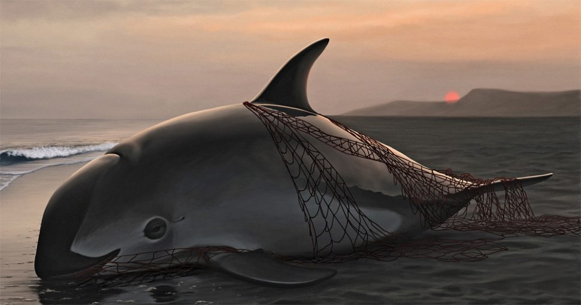
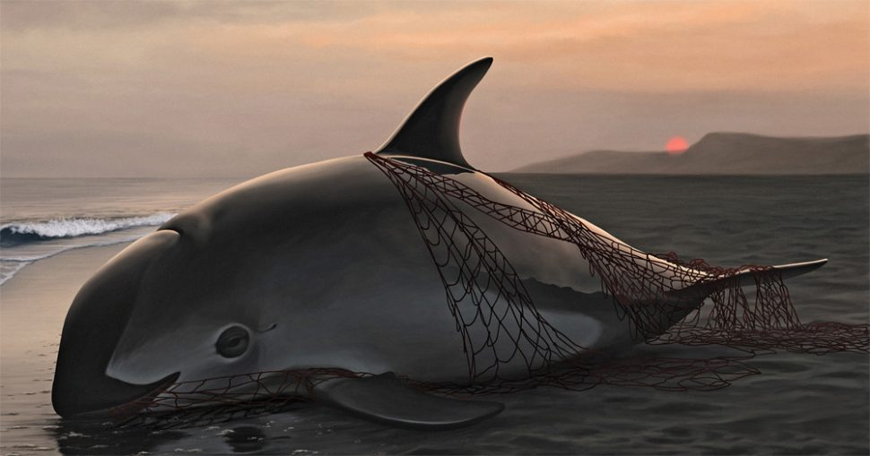

What exactly is the Zaquita Porpoise?
The Zaquita Porpoise is one of the most rare marine mammals on the planet. The Zaquita's are only found in the Sea of Coretex and the Mexican Canal.The vaquita has a large dark ring around its eyes and dark patches on its lips that form a thin line from the mouth to the pectoral fins. Its dorsal surface is dark gray, sides pale gray and ventral surface white with long, light gray markings. Newborn vaquita have darker coloration and a wide gray fringe of color that runs from the head to the dorsal flukes, passing through the dorsal and pectoral fins. They are most often found close to shore in the Gulf's shallow waters, although they quickly swim away if a boat approaches. This Porpoise wasn't discovered til late 1958 and now we are on the brink of losing these creatures forever.
What's Happening to the Zaquita's?
The vaquita will be extinct, possibly by 2019, if fishery by catch is not eliminated immediately. Nearly one out of every five vaquita get entangled and drown in gillnets intended for other marine species like the totoaba, a critically endangered fish also found in the upper Gulf of California. Entanglement in gillnets set for totoaba and was the primary cause that brought the vaquita to low levels by the mid-1970s. Thousands of swim bladders are dried and smuggled out of Mexico, often through the United States. Fishermen receive around $4,000 for each pound of Zaquita swim bladder, equivalent to half a year’s income from legal fishing activities. It is this illegal trade that is currently driving the precipitous decline in vaquita numbers.
 



Why are the Zaquita's so important?

Extinction of the vaquita may also impact the vaquita prey populations in the northern Gulf ecosystem.Scientists have been warning for nearly 20 years that the only way to save the vaquita is to eliminate the presence of gillnets in the only region that this species calls home. The disappearance of the vaquita could lead to potential over-population of their prey species such as benthic fishes, squid, and crustaceans. With as few as 30 left, the species will become extinct without a fully enforced gillnet ban throughout their entire range. WWF urgently working to ensure they can live and thrive in their natural habitat.